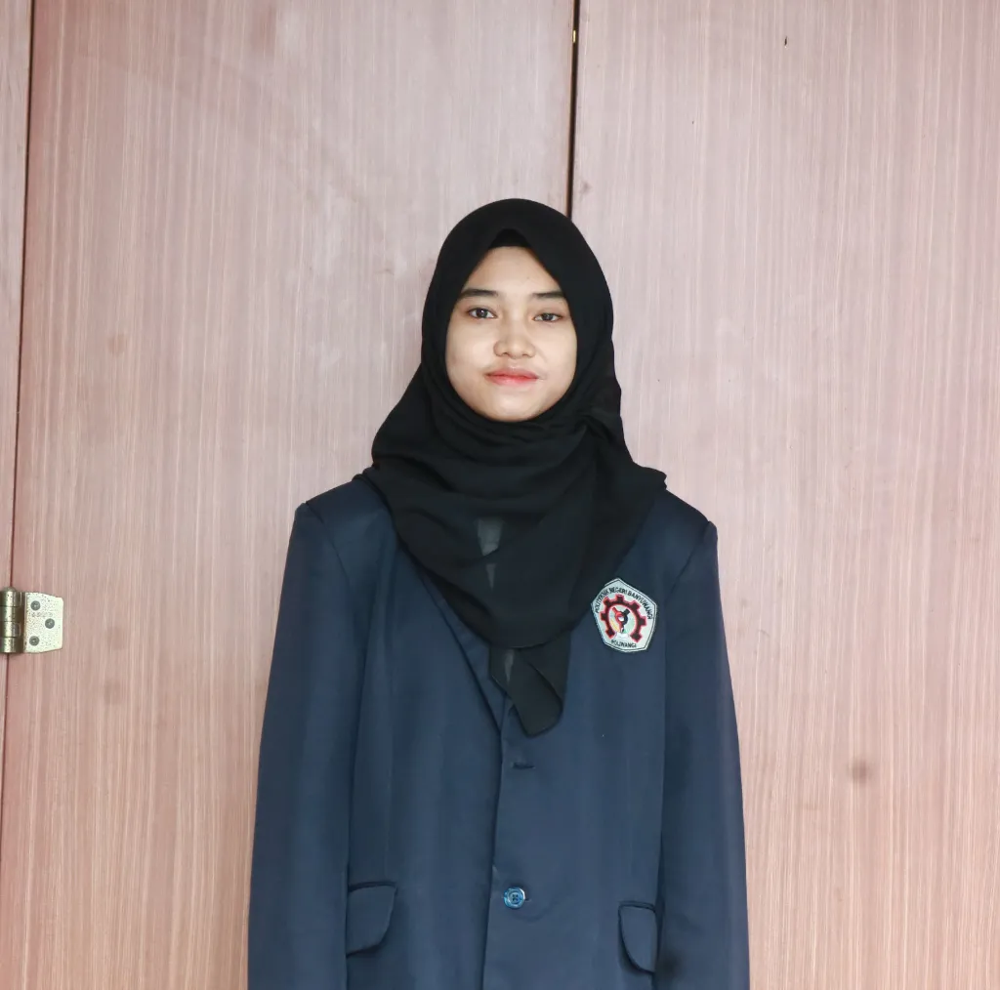

Hi! I'm Arifah Machi
Continuously developing technical and teamwork skills to become a responsive, solution-oriented developer ready for the digital era.

肖像PORTFOLIOHi! I'm Arifah Nur Basyiroh Machi, a student at Banyuwangi State Polytechnic, majoring in Business and Informatics, specializing in UI/UX design, Next.js, Laravel, MySQL, and Flutter.
Familiar with project-based learning, I'm learning how to develop web and mobile applications. I'm continuously developing my technical and teamwork skills to become a responsive, solution-oriented developer, ready to face the challenges of the digital era.
Explore Projects


Chronicles of Craft & Accolades
An interactive journal of awards, design championships, and engineering leadership. Turn the pages to explore milestones, and drag the brass magnifying glass across the pages to inspect fine details.
Drag page edge to flip · Drag the brass magnifying glass to inspect

Get in Touch
Have an exciting project, collaboration inquiry, or simply want to connect? My inbox is always open.